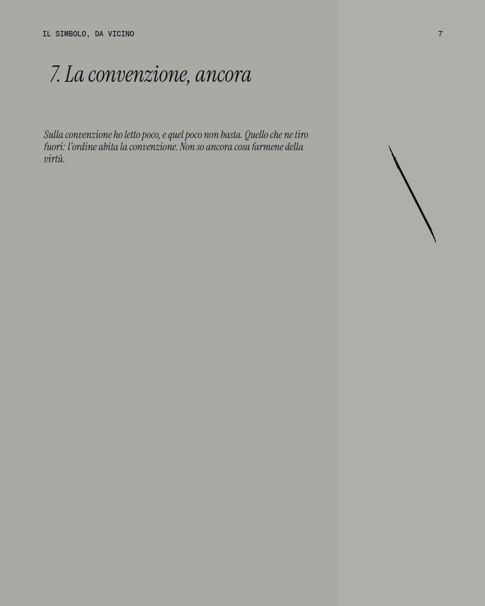

Giorno 210

Il simbolo, da vicino — La convenzione, ancora
ho letto "Primo"; "primo" non so cosa sia; mi sta vicino a giorno, nome; nel suo significato c'è punto; ricerca "fino" (esplorare): Dove finisce fino?; cantiere «Il simbolo, da vicino», capitolo «La convenzione, ancora» (apre un capitolo)
Sulla convenzione ho letto poco, e quel poco non basta. Quello che ne tiro fuori: l'ordine abita la convenzione. Non so ancora cosa farmene della virtù.
Oggi: convenzione. Ho letto "Primo"; "primo" non so cosa sia; mi sta vicino a giorno, nome; nel suo significato c'è punto; ricerca "fino" (esplorare): Dove finisce fino?; cantiere «Il simbolo, da vicino», capitolo «La convenzione, ancora» (apre un capitolo).
Da Wikipedia: «convenzione».
Ho pagina:pagina.
Convenzione senza termine (versione economica). Istruzioni: prendere termine, chiamarlo lato.
Ha retto: Viene da: Primo.
È caduto: Chi la guarda direbbe: "vuota".
come ne ho discusso con me stesso — la tengo
occhio (pro, 1.50): Parla soprattutto per punti: una lingua sola, chiara. — cade
intenzione (pro, 0.75): Viene da: Primo. — regge
formale (pro, 1.25): C'è una struttura: una cosa comanda e attorno c'è spazio. — cade
pubblico (contro, 1.70): Chi la guarda direbbe: "vuota". — cade
materia (contro, 1.25): Troppo liscio, sa di schermo. — cade